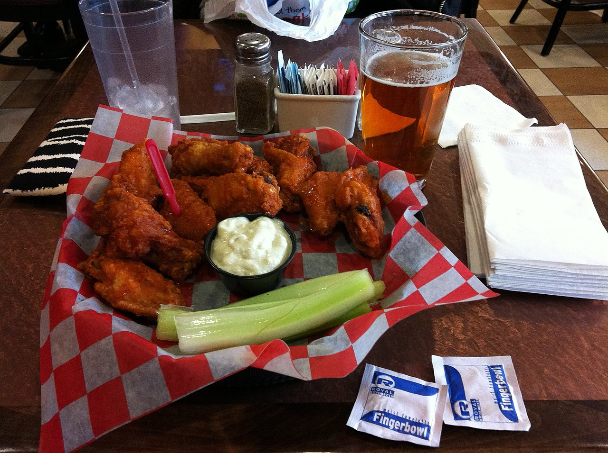

a long one · NYThe origin fight
also: Who invented the Buffalo wing

Two Buffalo kitchens claim the wing, and neither claim rests on a document. The Anchor Bar dates the dish to the night of 4 March 1964 and tells the story three different ways. John Young was selling breaded whole wings in a tomato sauce he called mumbo from 1961, registered his shop's name at the county courthouse, and said the Anchor Bar carried no wings as a regular menu item until 1974. A 1969 newspaper profile of the Anchor Bar does not mention wings. Duff's started selling them across town that same year. The city proclaimed a Chicken Wing Day in 1977, Calvin Trillin carried the story out of western New York in 1980, and the National Buffalo Wing Festival put John Young in its Hall of Flame in 2013. This page lays out who claims what and on what evidence.
What nobody argues about
Chicken wings were cheap in the early 1960s because almost nobody ordered them. A wing went into stock, into soup, or into the bin. Every version of the origin story starts from that fact and explains what changed it. Inference — the cheapness matters more than the invention: a dish made of a throwaway cut can appear in several kitchens at once without anybody copying anybody.
The Anchor Bar, told three ways
Frank and Teressa Bellissimo opened the Anchor Bar on Main Street in 1935. Their son Dominic told the wing story for thirty years, and the family told it in at least three shapes.
In the first, Dominic was tending bar late one night, friends of his arrived unannounced, and Teressa wanted something fast to put in front of them, so she deep-fried wings and tossed them in cayenne hot sauce.
In the second, which Dominic gave Calvin Trillin in 1980, the clock did the work. Trillin reports him saying it was a Friday night, people were buying a lot of drinks, and he wanted to do something nice for them at midnight, when the mostly Catholic drinkers could eat meat again.
In the third, Frank told it as an accident of delivery: wings arrived instead of the backs and necks the bar cooked into its spaghetti sauce, and faced with them he asked Teressa to do something. In every version Teressa sends the wings out with celery and blue cheese, and the first plates go out free.
The date
The house pins it to 4 March 1964 — Dominic behind the bar, friends arriving late, little food left, wings meant for soup going into the fryer with butter and cayenne. That date is the claim's spine. Inference — a date that specific, attached to a night no receipt survives from, is the part of the story a reader should hold most loosely; it is also the part the Anchor Bar has never moved.
John Young, from 1961
John Young moved to Buffalo from Stockton, Alabama in 1948, aged thirteen. From 1961 he sold uncut chicken wings — breaded, deep-fried, and served in a tomato-based sauce he called mumbo — at John Young's Wings 'n Things. He said a travelling boxer had told him about a restaurant in Washington, D.C. doing good business in wings, and that he decided to specialise. He registered the shop's name at the county courthouse and left the Buffalo area in 1970.
In a later interview Young said the Anchor Bar did not offer Buffalo wings as a regular menu item until 1974. His wing is not the Anchor Bar's wing: it is whole, it is breaded, and the sauce is tomato rather than cayenne and butter. Inference — that difference cuts both ways. It weakens any claim that one shop copied the other, and it complicates the question the argument is usually asked in, which assumes one dish with one inventor.
1969, and what a newspaper left out
A local newspaper wrote up the Anchor Bar in 1969 and did not mention wings. Duff's, across town, began selling them that year; Duff's itself dates to 1946 under founder Louise Duffney and only took the wing into its name in 1985. Inference — a profile that skips the dish is not proof the dish was absent, but it sits badly beside a claim that the bar had been selling it for five years.
The city settles nothing, and celebrates
In 1977 the city of Buffalo issued a proclamation honouring Frank Bellissimo and declared 29 July 1977 Chicken Wing Day. A proclamation is an act of civic affection, not a finding of fact; it names one man and one bar, and it is the oldest official document in the argument.
Trillin, 1980
Calvin Trillin had written the New Yorker's U.S. Journal since 1967, reporting local events across the country. In 1980 he turned the column on the Buffalo wing and published An Attempt to Compile a Short History of the Buffalo Chicken Wing. The title is the argument in miniature: an attempt, a compilation, a short history. The piece carried the Anchor Bar's version out of western New York and into the national record, and it is where Dominic's midnight-Friday telling is preserved.
2013, and 2021
At the National Buffalo Wing Festival in 2013, John Young was inducted into the festival's National Buffalo Wing Hall of Flame — the festival's own recognition, given by the event Drew Cerza founded in 2002.
In November 2021 a mural went up at Jefferson and Carlton, the corner where Young's first Wings 'n Things stood. John Baker and the WNY Urban Arts Collective installed it, recreating an original work by William Cooper and Dalton Easton that had hung inside the shop. Buffalo Bike Tours raised more than $12,000 for it through a GoFundMe, wing pop-ups, and grants from the Baird Foundation and the Buffalo Niagara Medical Campus. Family members of Young stood at the unveiling.
What nobody can show
No menu from 1964 names a wing. No receipt, no photograph, no order slip, no supplier invoice for the mistaken delivery has been produced by anyone in sixty years of arguing. The Anchor Bar's account reaches the record through the family telling it, and the earliest published telling anyone cites is Trillin's, sixteen years after the night in question — which is testimony, not paper. John Young's account reaches the record the same way, through an interview given long after 1961.
The one dated document either side names is the courthouse registration of John Young's Wings 'n Things, and it dates the name of a shop, not the dish sold in it. The 1969 newspaper profile is the only contemporaneous paper anybody cites, and it is evidence of an absence, which is the weakest kind there is.
Inference — the argument is unresolvable on the evidence that exists, and both sides know it. That is why it is conducted in proclamations, trademarks, halls of fame and murals: every one of those is a way of settling a question that the documents will not settle.
How the claims are held now
The Anchor Bar trademarked the phrase and runs 18 locations as of 2026, and its sauces sell through Tops and Wegmans in the United States and Sobey's and Metro in Canada. Duff's trades on the rivalry and has locations across western New York, Rochester, Texas and the Toronto area. Visit Buffalo runs a Buffalo Wing Trail that lists fourteen stops and puts the Anchor Bar and Duff's on the same list. Young's claim is held by a mural, a hall-of-fame induction, and the people who keep repeating it.
The particulars
| kind | essay |
|---|---|
| state | NY |
| region | Western New York, The United States |
| confidence | high · updated 2026-09-16 |
Who it runs with
Who talks about it
Where we got it
- Buffalo wing · link
- Anchor Bar · link
- Duff's Famous Wings · link
- An Attempt to Compile a Short History of the Buffalo Chicken Wing — Calvin Trillin, 1980
- Calvin Trillin · link
- National Buffalo Wing Festival · link
- Mumbo sauce · link
- A Banner Day for the Legacy of John Young, aka "King of the Wings" · link
- Buffalo Wing Trail · link
Where it came from: Cited a source we name · Harvested pulled from an open dataset · Tradition what the tradition says, hedged · Inference this project's reasoning · Field somebody stood there. This record as JSON.